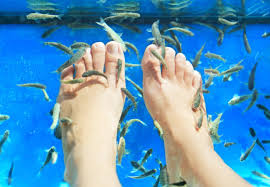

Fish Spa
Benifits
- Natural exfoliation of dead skin – Smoother and complete blazing skin with very simple moisturizer absorption
- Promote body-fluid circulation – Micro massage sensation from these ‘little masseurs’
- Lightening of secondary scars
- Alleviating of psoriasis and minor eczema
- Release stress and tension – Ticklish sensation initating perpetual laughter!
Precaution
- Check if the metal tools your pedicurist is using on you are sterilized
- Make sure the foot tubs are cleaned between clients